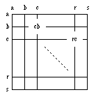

 点和走子的坐标系统
第一个字母指定列数 (从左往右), 第二个指定行数 (从上往下)。棋盘的左上部分可当作小棋盘使用，例如字母 "a"-"m" 用于 13×13的棋盘。
放弃一手用 '[]' 表示，也可以用 '[tt]' 代替(只可用于小于19×19的棋盘)，就是说应用软件应该能够处理这两种表示方式。保留 '[tt]' 的表示方式是为了兼容 FF[3]。
使用小写字母仅用于小于 26×26 的棋盘。
FF[4] 允许使用更大的棋盘直到 52×52。在这种情况下，大写字母被用于表示 27-52（行、列），就是说 'a'=1 ... 'z'=26 , 'A'=27 ... 'Z'=52
属性: HA 属性值: 数 属性类型: 对局信息 功能: 定义让子数(>=2)。 如果有让子，让子的位置应当在该节点中由属性AB指定。 属性 HA 本身不在棋盘上增加任何棋子，只是说明有让子存在。 相关属性: KM, RE, RU 属性: KM 属性值: 实数 属性类型: 对局信息 功能: 定义贴还数。 相关属性: HA, RE, RU 属性: TB 属性值: 由点组成的列 属性类型: - 功能: 指定黑棋的势力范围 (需根据围棋规则判定)。 指定的点必须唯一。 相关属性: TW 属性: TW 属性值: 由点组成的列 属性类型: - 功能: 指定白棋的势力范围 (需根据围棋规则判定)。 指定的点必须唯一。 相关属性: TB